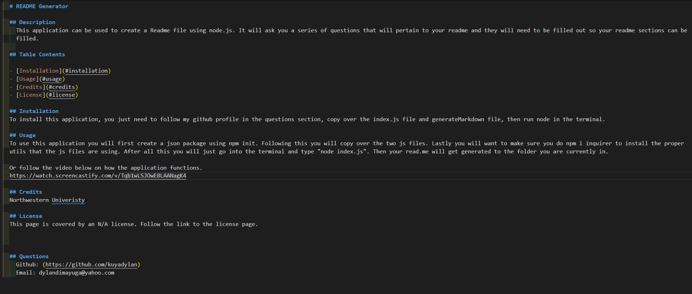

About Me
Hi, my name is Dylan Dimayuga. I am currently taking the Northwestern Full Stack Web Developing Coding Bootcamp. I have taken interest into the front-end development of websites and have just started getting to learn back-end development. After finishing this bootcamp, I hope to pursue a Web Developer role and become more proficient in building websites. So far, I find myself skilled in HTML and CSS, while being familiar with Javascript. I hope to become skilled in MySQL, jQuery, Heroku, API, and more. This porfolio will see constant changes as I hone my skills, complete more projects, and learn.
Interests
- Video Games
- Volleyball
- Eating at new restaurants
- Working Out
- Traveling
Projects
Password-Generator

This was one of my work projects where I created an application that will ask you a series of questions and generate a randomized password based on the inputs you put in.
About-Me-Quiz

This project is a quiz game that will test your knowledge about me as well as give you a score based on how you did on the quiz.
Work-Day-Scheduler
A project that shows a typical work day, that can take user input for the hour and save it. The schedule will also change colors based on if the hour has passed, if that hour is occurring, and if the hour has yet to come.
Weather-Dashboard

A weather application that will take city inputs and display the current weather and the weather forecast for the next 5 days.
News-To-Stock
This project is used to display a comparison between news articles and the value a stock is at for the day. If a stock name is inputted into the input, it will populate the news article area with 30 of the most popular articles that contain that input and display the stock value for the last 30 days of that stock.
Readme-Generator
A Readme-generator application that will take input in the terminal using Node and create a quality readme.
Team-Profile-Generator
An application that generates an html and css document containing all the created team members and the information that was provided for them using terminal input.
Note-Taker
An application that allows for notes to be taken and can be saved to to the side where it can be accessed at a later date. Once a note has served its purpose, the trash can icon will allow for the note to be deleted.
Employee-Tracker
This application is made so that a user is able to track everything within a company. It will give you a list of all the departments, all the jobs, & all the employees. Along with showing this, it can also take inputs to add a new department, add a new job, add a new employee, and update an existing employee.
E-Commerce
This application is used to generate a list of categories, products, tags and product tags that will show relationship to one another. It acts as a search system so a user can search for a specific item they want and display details on that item using only back end.
Tech-Blog
A full stack application that allows user to signup/login for the app, get a personal dashboard where they can create a post that will be visable to anyone on the homepage of the app, edit or delete those posts that they created, and comment on other user's posts on the home page.
Video-Game-Database
This application was created to allow user's to create their own account, which is saved to the application, create their own library of games that they own, and create a wishlist where they can add games thats they wish to play or purchase in the future.
Contact Info
555-555-5555